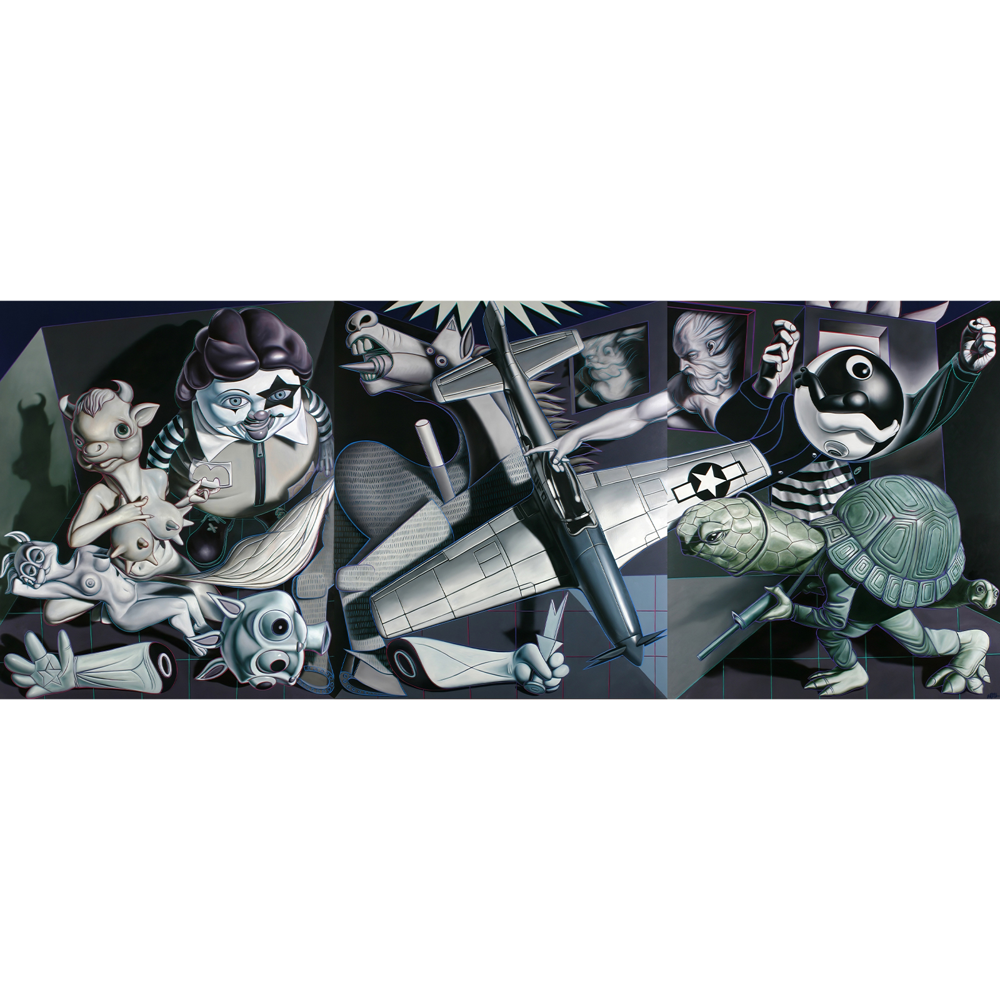

Exhibitions
Robert Berman Gallery, gallery presentation (works exhibited via gallery), Santa Monica, California, US, circa 2006–2011.
Literature
Ron English, Abject Expressionism: The Art of Ron English (San Francisco: Last Gasp, 2002), p.102. ISBN 978-0867196894.
Notes
This work references Pablo Picasso’s Guernica (1937).